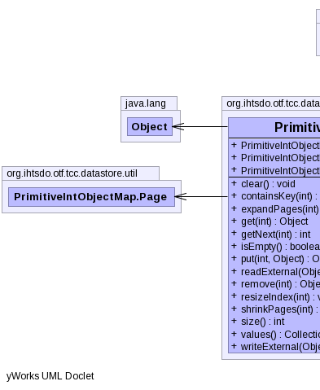

public class PrimitiveIntObjectMap extends Object implements Externalizable
|  |
| Modifier and Type | Class and Description |
|---|---|
static class |
PrimitiveIntObjectMap.Page |
| Constructor and Description |
|---|
PrimitiveIntObjectMap() |
PrimitiveIntObjectMap(int tableSize) |
PrimitiveIntObjectMap(int tableSize,
int indexIntervals) |
| Modifier and Type | Method and Description |
|---|---|
void |
clear() |
boolean |
containsKey(int key) |
PrimitiveIntObjectMap.Page |
expandPages(int toPageId)
Expand index to accomodate given pageId Create empty TopNodes
|
Object |
get(int key) |
int |
getNext(int key)
gets the next populated key, after the given key position.
|
boolean |
isEmpty() |
Object |
put(int key,
Object value) |
void |
readExternal(ObjectInput in) |
Object |
remove(int key) |
void |
resizeIndex(int newSize) |
void |
shrinkPages(int toPageId)
Shrink index to accomodate given pageId
|
int |
size() |
Collection |
values() |
void |
writeExternal(ObjectOutput out) |
public PrimitiveIntObjectMap()
public PrimitiveIntObjectMap(int tableSize)
public PrimitiveIntObjectMap(int tableSize,
int indexIntervals)
public void readExternal(ObjectInput in) throws IOException, ClassNotFoundException
readExternal in interface ExternalizableIOExceptionClassNotFoundExceptionpublic void writeExternal(ObjectOutput out) throws IOException
writeExternal in interface ExternalizableIOExceptionpublic void clear()
public boolean isEmpty()
public Object remove(int key)
public Object get(int key)
public int getNext(int key)
key - public int size()
public Collection values()
public boolean containsKey(int key)
public PrimitiveIntObjectMap.Page expandPages(int toPageId)
public void shrinkPages(int toPageId)
public void resizeIndex(int newSize)
Copyright © 2014 International Health Terminology Standards Development Organisation. All rights reserved.